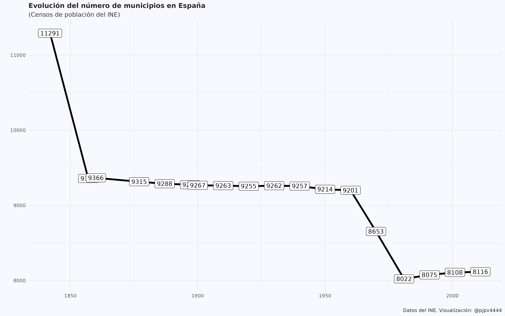

![]()

1 Introducción
En el post anterior describí el proceso para obtener los datos de los censos históricos del INE. Los censos proporcionan datos de población a nivel municipal1, de forma que ahora utilizaré esos datos para analizar como ha evolucionado el número de municipios en España en el tiempo.
Objetivo: ver la evolución del número de municipios en España.
El municipio en España es una entidad administrativa de nivel local que puede agrupar a una o varias localidades; por ejemplo el municipio de Pancrudo agrupa cuatro localidades2.Los municipios no son entidades fijas, sino que por distintos motivos hay municipios que desaparecen y otros que aparecen. Por ejemplo, Torremolinos existió como municipio hasta el censo de 1920, para desaparecer en el de 1930 por su integración en el municipio de Málaga, para posteriormente, en el censo de 1991, volver a ser municipio tras segregarse de Málaga.
El número de municipios cambia en el tiempo.
2 ¿Cuantos municipios han existido en España?
Debería ser una pregunta fácil de responder pero no lo es; como ejemplo este documento. Hasta donde yo sé, no existe en España un registro del que pueda obtenerse el número de municipios que han existido en el tiempo; así que, trataré de dar una respuesta utilizando los datos de los Censos históricos y del Padrón.
No es una pregunta fácil.
Lo que si puedo decir es que, con datos del Padrón de 2021, actualmente hay en España 8.131 municipios.
Actualmente hay 8.131 municipios.
El INE proporciona datos de 18 censos de población, el primero en 1842 y el último en 2011. En el censo de 1842 hay datos de 11.291 municipios, mientras que en el de 2021, hay 8.116; es decir, una reducción de 3.175 municipios a lo largo de este periodo. Con esta información parece que la respuesta debería ser 11.291, pero no es así, la dinámica de creación y desaparición de municipios es más compleja, hay municipios como Torremolinos, que desaparecen y vuelven a aparecer.
En los 18 censos que proporciona el INE podemos encontrar un total de 11.910 códigos municipales únicos, así que parece que han existido en ese periodo el mismo número de municipios. Digo parece porque la respuesta no es tan clara, ya que hay casos como la localidad Gatova, que cambió su código municipal de 12066 a 46092 al incorporarse a la provincia de Valencia, desde la de Castellón, en el censo de 2001. ¿Son municipios diferentes? Bueno, podemos pensar que sí, ya que tienen códigos municipales diferentes.
Así que, según mis cuentas y utilizando datos de los Censos3, han existido4 en España 11.910 municipios.
Con datos de los Censos, de 1842 a 2011, han existido 11.910 municipios.
Sin embargo, el último censo publicado es de 2011 y estamos en 2022, así que se han podido crear más municipios desde 2011 hasta la actualidad. Efectivamente, si utilizamos los datos del Padrón5, desde 2011 a 2022 se crearon en España 16 municipios que no existían antes, por lo que la respuesta final es: han existido 11.926 municipios en Spain.
Añadiendo los datos del Padrón, ese número aumenta hasta los 11.926 municipios.
Como actualmente, con datos del Padrón de 2021, existen 8.131 municipios6, eso quiere decir que desde el censo de 1842 se ha reducido el número de municipios en 3.795.
3 Evolución del número de municipios (Censos)
Utilizando los datos de los 18 censos de población disponibles en la web del INE, la evolución del número de municipios puede verse en Figura 1 .
En la Figura 1 se aprecia que desde 1842 se ha reducido el número de municipios, principalmente entre el censo de 1842 y el de 1933, y en los censos de 1979 y 1981. De las explicaciones no sé mucho: 1) el censo de 1842 fue, como leí no sé donde, un censo extraño, y 2) A partir de 1970 se hizo un esfuerzo político por reducir el número de municipios …..
Para ahondar un poco más en la dinámica de la evolución del número de municipios en el tiempo, en la siguiente tabla se muestra más información.
Código
library(tidyverse)
df <- pjpv.datos.2022::ine_censos_historicos #- censos históricos (1842-2011)
# TABLA GOOD del CENSO:
tabla_0 <- df %>% drop_na(pob) %>%
group_by(year) %>% summarise(nn = n_distinct(ine_muni))
tabla_1 <- df %>%
filter(indicador %in% c("aparece", "desaparece")) %>%
count(year, indicador) %>%
pivot_wider(names_from = indicador, values_from = n) %>%
mutate(nn_netos = aparece - desaparece) %>%
add_case(year = 1842, .before = 1)
tabla_1a <- left_join(tabla_0, tabla_1) %>%
mutate(comprobacion = nn_netos) %>%
mutate(comprobacion = ifelse(year == "1842", first(nn), comprobacion)) %>%
mutate(comprobacion = cumsum(comprobacion) - nn)
tabla_censo_ok <- tabla_1a %>% select(-comprobacion)
names(tabla_censo_ok) <- c("Censo", "Nº municipios", "desaparecen", "aparecen", "Incremento")
tabla_censo_ok <- tabla_censo_ok %>% select(1, 2, "Incremento", everything())
table_ok <- tabla_censo_ok %>%
reactable::reactable(defaultPageSize = 18, theme = reactablefmtr::fivethirtyeight())
table_okLa Figura 1 proporciona información, pero la tabla anterior amplia un poco esa información, apreciándose que del censo de 1842 al siguiente se redujo el número de municipios en 1933; pero esa reducción, como se aprecia en la tabla, es resultado de que desaparecieron 2.199 municipios mientras que aparecieron, o se crearon, 266.
4 Evolución del número de municipios (Padrón)
Si en lugar de los datos de los Censos, utilizamos los datos del Padrón (1996, 1998-2021) la evolución del número de municipios en España quedaría como:

La Figura 2 muestra que a partir de 1996, el número de municipios ha aumentado de forma muy suave pero continuada, hasta llegar a los 8.131 municipios en 2021.
5 Curiosidades
En las Figura 1 y Figura 2 se muestran datos sobre la evolución del número de municipios, y hay 2 años (2001 y 2011) en que tenemos cifras para el número de municipios procedentes de 2 fuentes: Censos y padrón. ¿Coincidirán? No . Ya diré porqué. Es “logico”, bueno, puede pasar.
6 Biblio
Biblio:
- artículo PAIS: https://elpais.com/elpais/2017/02/02/media/1486066904_389254.html La mitad de municipios puede desaparecer
Notas
Para obtener datos de población a nivel de localidad o núcleos de población hay que acudir al Nomenclátor del INE.↩︎
Una localidad es una división administrativa o territorial formada por un núcleo de población con identidad propia, ya sea esta una aldea, pueblo o ciudad↩︎
En realidad según los códigos municipales únicos que he encontrado en la web de los censos históricos del INE↩︎
En realidad debería decir han sido censados.↩︎
Utilizo datos de población del Padrón continuo 1996 y 1998 a 2021↩︎
Hay otra forma de obtener el listado de municipios actuales; a través del Registro de entidades locales, concrétamente el listado de municipios se puede obtener aquí. Pues bien otra complicación más, de la que me enteré también por Paco Goerlich: en el REL existe un “municipio” (Tharsis, con código 21901) que nunca ha estado presente en el Padrón. Misterios de las estadísticas oficiales!!! Igual esta noticia puede arrojar algo de luz, parece que la Junta de Andalucia aprobó la segregación de Tharsis de Alosno, pero finalmente el Tribunal Supremo confirmó la sentencia del TSJA anulando el decreto de segregación de Tharsis de Alosno; sin embargo, a pesar de estar en una situación similar, si aparece en el Padrón el municipio de La Zarza-Perrunal (21902)↩︎